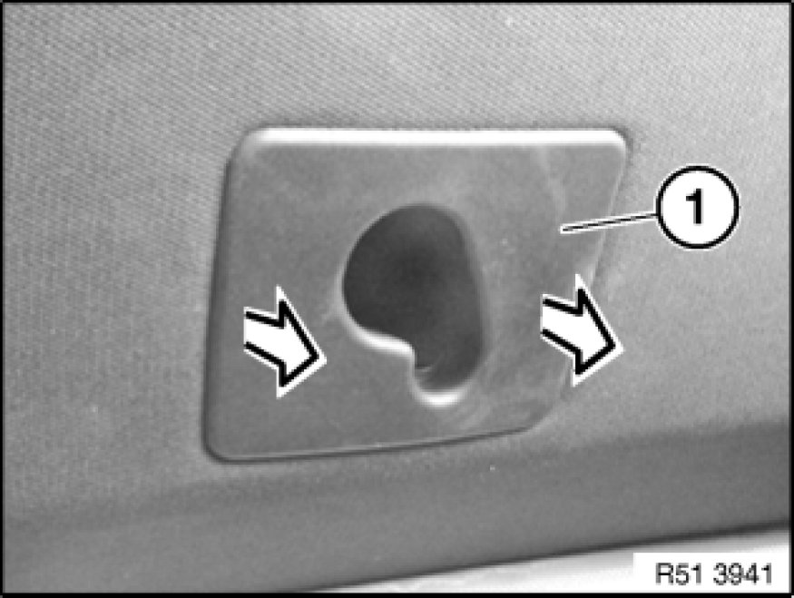
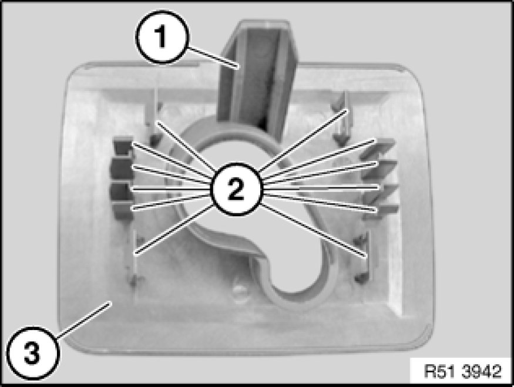
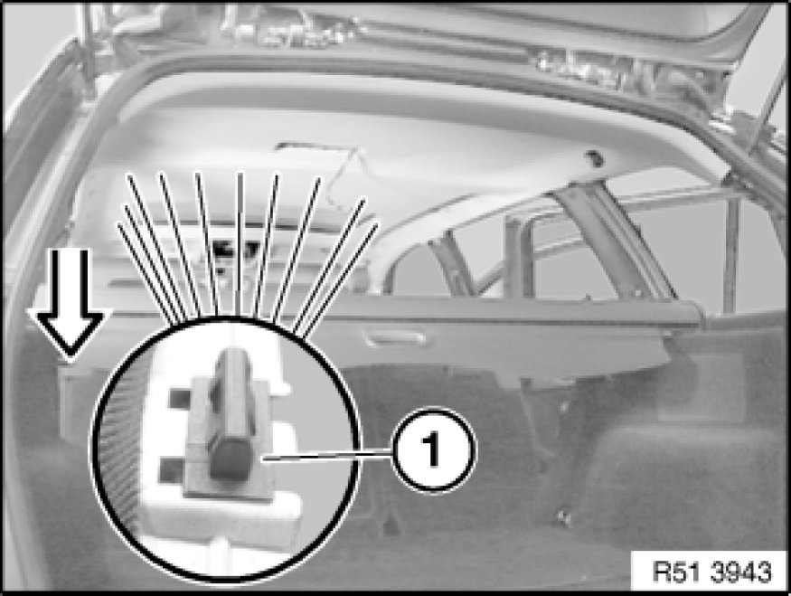
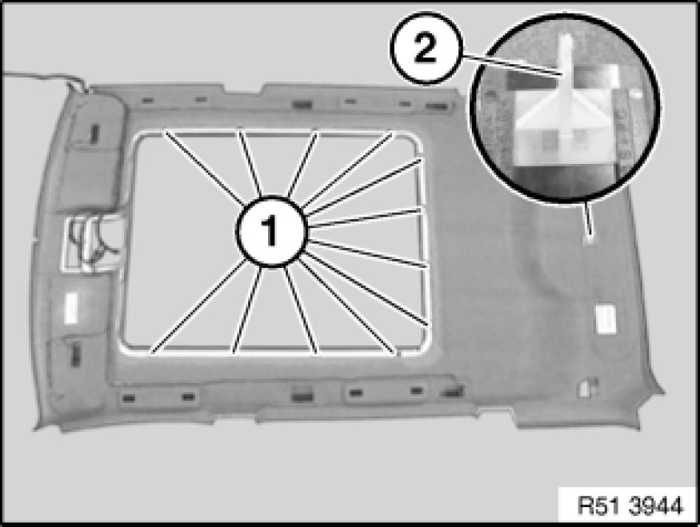

51 44 013 Removing And Installing Roofliner (On Version With Panorama Sunroof)
51 44 013 - Removing and installing roofliner (on version with panorama sunroof)

Necessary preliminary tasks:
- Remove both sun visors and counter supports Service and Repair
- Remove all handles
- Remove both trim panels for front roof pillar Removing and Installing/Replacing Trim for Roof Pillar at Front (A-pillar), Left or Right (A-pillar trim panel)
- Remove both trim panels for top door pillar Removing and Installing/Replacing Trim on Left or Right Door Pillar (Top) (B-pillar trim panel)
- Remove both trim panels for rear roof pillar Removing and Installing/Replacing Trim Panel for Rear Left or Right Roof Pillar (C-pillar trim panel)
- Remove both trim panels for rear roof pillar Pillar Trim (D-pillar trim panel)
- Remove trim on front roofliner 51 44 ... - Removing and installing front roofliner trim
- Remove front and rear head restraints Removing and Installing/Replacing Front Headrest (Normal/Manual)
- Remove all ceiling lights

Version with dividing net mounts:
If necessary, remove all dividing net mounts:
Unclip trim (1) towards bottom and remove.

Installation:
Guide (1) and catches (2) of trim (3) must not be damaged.

- Move both front seat backrests as far back as possible.
- Remove roller cover from luggage compartment.
- Fold both rear-seat backrests forward.
- Pull off mucket of front and rear doors.

Important!
The following tasks must be carried out with a second person assisting:
Unclip clips (1) in sunroof frame area towards bottom.
Extend rear roofliner towards bottom out of guide.
Turn headliner and remove towards rear.

Installation:
Clips (1) and guide (2) must not be damaged.
If necessary, replace clips (1) and guide (2).